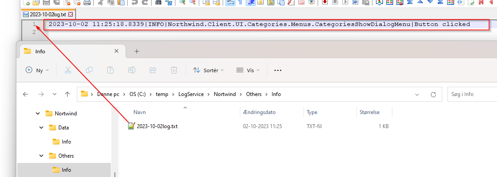

Use of NLog
Various kinds of 3rd party logging providers can be used. As mentioned here
Below is an example of using NLog
Requirement: It is desired to use NLog to save logs in text files.
Task: Add "NLog.Extensions.Logging" nuget package, add NLog.config file and add AddNLog() in App.xaml.cs
Implementation:
Add "NLog.Extensions.Logging" nuget package
Create a new text file "NLog.config" and set "Copy to Output directory" -> "Copy Always"
Call the AddNLog() method in App.xaml.cs
NLog.config:
<?xml version="1.0" encoding="utf-8"?>
<nlog xmlns="http://www.nlog-project.org/schemas/NLog.xsd" xmlns:xsi="http://www.w3.org/2001/XMLSchema-instance"
throwExceptions="true" autoReload="true"
internalLogFile="C:\temp\Log\NlogInfo.txt">
<variable name="logDirectory" value="C:\temp\LogService" />
<variable name="applicationname" value="Northwind" />
<targets>
<target name="DataLayer" xsi:type="BufferingWrapper" bufferSize="1000" flushTimeout="1000">
<target xsi:type="File" createDirs="true" fileName="${logDirectory}\${applicationname}\Data\${level}\${shortdate}log.txt" />
</target>
<target name="Errors" xsi:type="BufferingWrapper" bufferSize="1000" flushTimeout="1000">
<target xsi:type="File" createDirs="true" fileName="${logDirectory}\${applicationname}\Errors\${level}\${shortdate}log.txt" />
</target>
<target name="Others" xsi:type="BufferingWrapper" bufferSize="1000" flushTimeout="1000">
<target xsi:type="File" createDirs="true" fileName="${logDirectory}\${applicationname}\Others\${level}\${shortdate}log.txt" />
</target>
</targets>
<rules>
<logger name="Microsoft.EntityFrameworkCore.Database.*" levels="Info" writeTo="DataLayer" final="true" />
<logger name="Microsoft.EntityFrameworkCore.*" levels="Trace,Debug,Info,Warn" final="true" />
<logger name="*" levels="Trace,Debug,Info,Warn" writeTo="Others" final="true" />
<logger name="*" levels="Error,Fatal" writeTo="Errors" />
</rules>
</nlog>
App.xaml.cs
protected override void ConfigurateBuilder(HostApplicationBuilder builder)
{
base.ConfigurateBuilder(builder);
builder.Logging.AddNLog();
}
Now everything is logged down in text files based on the above rules in NLog.config. Below is an example of a log file for the previous example knap-klik-logging
